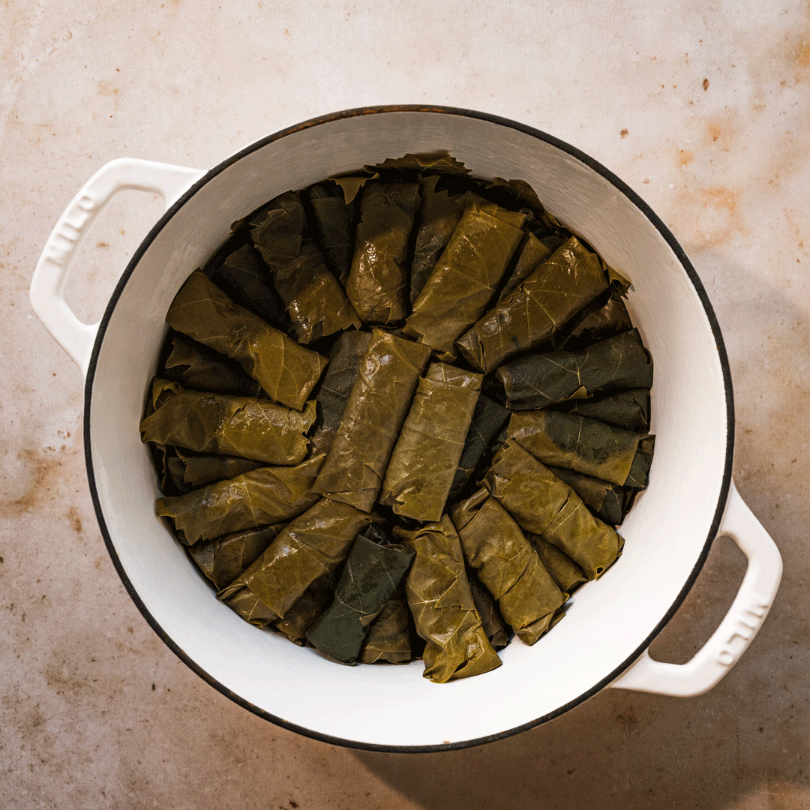

Making Dolma

Ingredients:
- 1 jar of preserved vine leaves (about 30-40 leaves)
- 1 cup of rice
- 1/2 cup of minced lamb or beef (optional)
- 1 small onion, finely chopped
- 2 tablespoons of olive oil
- 2 tablespoons of pine nuts (optional)
- 2 tablespoons of chopped fresh parsley
- 2 tablespoons of chopped fresh mint
- Juice of 1 lemon
- Salt and pepper to taste
- Water for cooking
How to make it!
- Prepare the vine leaves: Remove the vine leaves from the jar and carefully separate them. Rinse them under cold water to remove any excess brine or salt. Place them in a bowl of hot water to soften while you prepare the filling.
- Prepare the filling: In a large bowl, combine the rice, minced meat (if using), chopped onion, olive oil, pine nuts (if using), parsley, mint, lemon juice, salt, and pepper. Mix well until all the ingredients are evenly combined.
- Stuff the vine leaves: Take one vine leaf at a time and place it flat on a clean surface, smooth side down. Trim off any tough stems. Place a small amount (about 1 tablespoon) of the filling near the stem end of the leaf. Fold the sides of the leaf over the filling, then roll it up tightly to form a small parcel. Repeat this process with the remaining vine leaves and filling.
- Cook the stuffed vine leaves: Line the bottom of a large pot with any torn or unusable vine leaves to prevent sticking. Arrange the stuffed vine leaves neatly in layers, seam side down, in the pot. Place a heatproof plate on top to keep them from unraveling during cooking. Add enough water to cover the stuffed vine leaves.
- Cook the dolmas: Bring the water to a boil, then reduce the heat to low and cover the pot. Simmer gently for about 45 minutes to 1 hour, or until the rice is cooked and the vine leaves are tender. Check occasionally to make sure the water hasn't evaporated completely. If needed, add a little more water.
- Serve and enjoy: Once cooked, remove the stuffed vine leaves from the pot and let them cool slightly. You can serve them warm or at room temperature. They are delicious on their own or with a side of yogurt even!
Enjoy your homemade dolma!
Home page